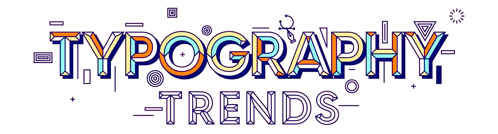
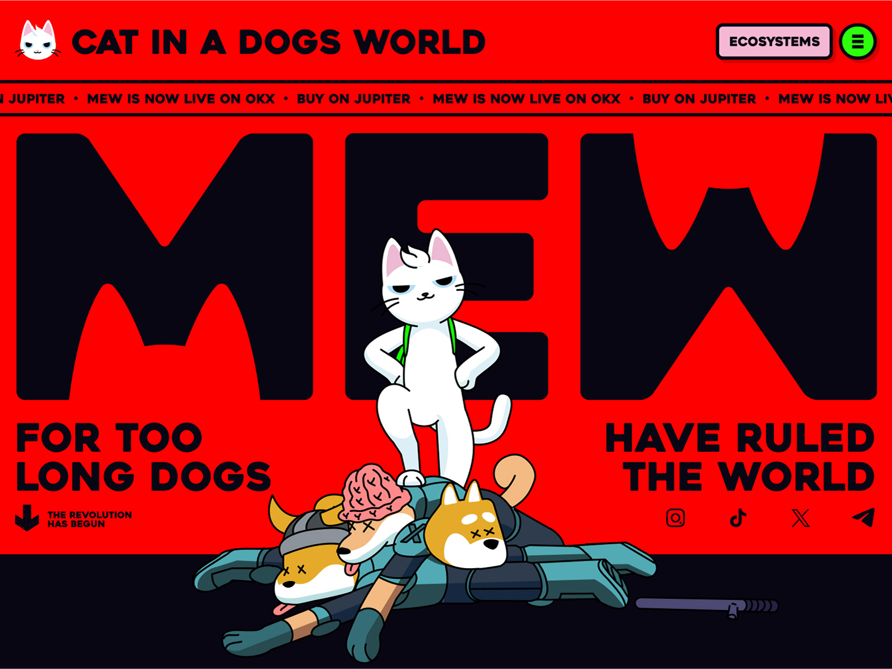
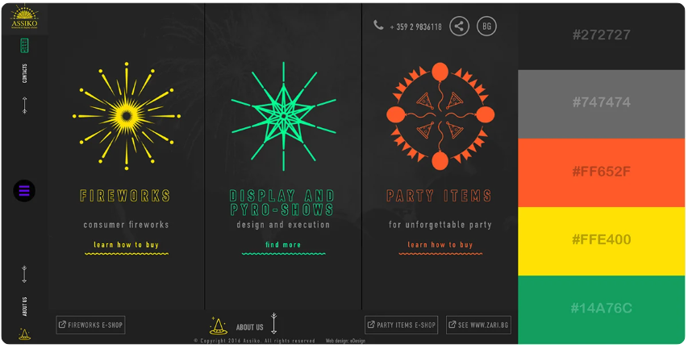

Enhancing User Experience Through Typography |
|  |
Which Font Works Best for Your Design?Color is one of the most powerful tools in website design. It can be used to attract attention, express meaning, create desire, drive conversions, and even earn a customer's loyalty. When it comes to creating impactful designs, the choice between warm and cool color schemes plays a crucial role in shaping perceptions, evoking emotions, and conveying messages. Both have their strengths, but understanding their differences and applications can make all the difference in achieving your design goals. Exploring Effective Color Design: A Personal TakeawayIn my research on what constitutes good or bad color design in a layout, I visited several websites that showcased a wide range of approaches. Among them, a few stood out for their exceptional use of color. These sites skillfully combined warm, subdued, cool, and light colors to achieve an unusual yet harmonious balance. The interplay of these contrasting tones created a design that not only complemented itself but also worked seamlessly to engage the viewer. Read my detailed reviews below to see how these unique color combinations elevate web design to an art form. |

A Review of "In Space We Trust"The interactive site In Space We Trust is a stellar example of how effective use of color theory can elevate user experience. The site employs a dark monochromatic color scheme for its background, paired with light accent colors. This combination creates a clean, clear navigation system that grabs attention and guides the user seamlessly through the content. A key element of the design is the transition of primary background colors and the carefully chosen accent hues applied to graphics and text. These transitions are not only visually appealing but also easy on the eyes, enhancing readability and maintaining user engagement. The harmonious interplay of colors kept me intrigued, encouraging me to explore further and anticipate what might come next. This thoughtful application of color theory—balancing contrast, harmony, and visual comfort—ensures that the site is both aesthetically pleasing and functional, making it a standout in interactive web design. |
ProsEffective Use of Color Theory:
|
ConsOveruse of Dark Background:
|
|
Conclusion
"In Space We Trust" is a masterclass in blending interactivity, storytelling, and thoughtful application of color theory. Its dark monochromatic background paired with light accents creates a visually immersive experience, drawing users into its narrative. The transitions between colors are smooth and visually comfortable, maintaining engagement while ensuring readability. While the site excels in its creative approach and user engagement, accessibility considerations could enhance its inclusivity for a broader audience. Overall, "In Space We Trust" demonstrates how innovative design and effective use of color can transform a website into an unforgettable digital journey. |

A Review of Assiko.com"The interactive website Assiko demonstrates a bold use of color theory, employing three fluorescent-bright colors against a charcoal background. This contrast makes the colors pop and immediately grabs attention, creating a visually striking experience. Interestingly, these colors are not used in combination but function independently, standing out against the background, which effectively serves as the primary color in the visual hierarchy. This approach defies traditional color harmony rules, as the colors are typically too competitive to coexist harmoniously on a page. |
ProsBold and Memorable Visuals:
|
ConsAccessibility Concerns:
|
|
Conclusion
Assiko.com is a visually bold and engaging website that pushes the boundaries of color theory and interactive design. While it succeeds in creating a memorable experience, the lack of accessibility considerations and the intensity of its visual design could alienate certain users. To enhance its impact, the site could balance its dynamic visuals with greater inclusivity and broader appeal. |